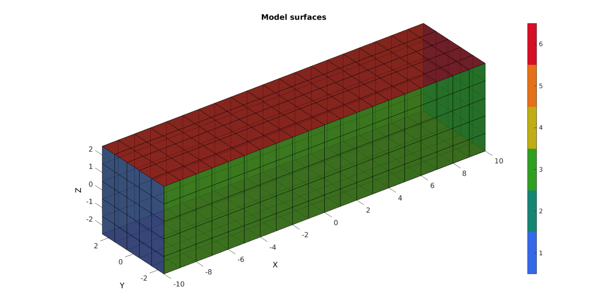
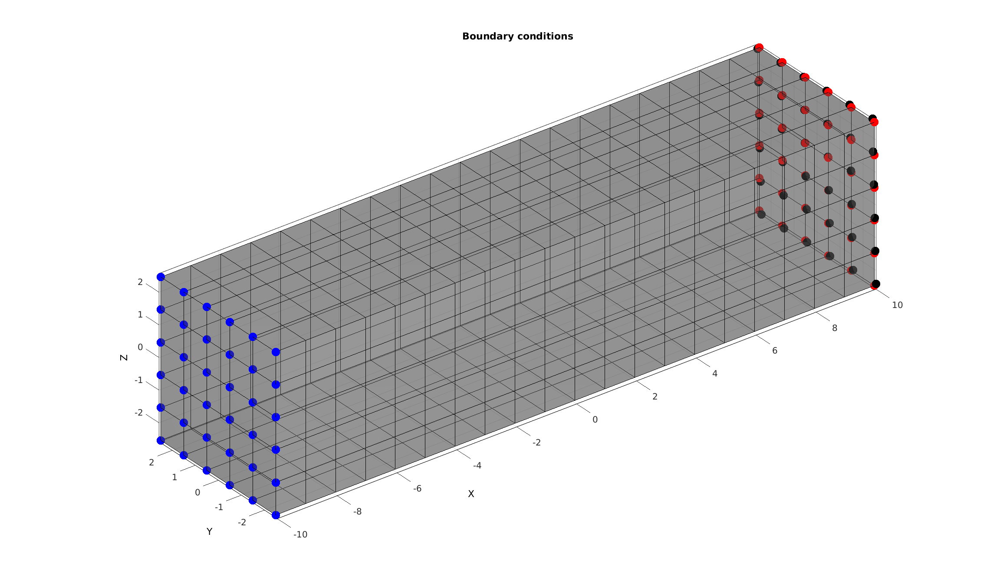
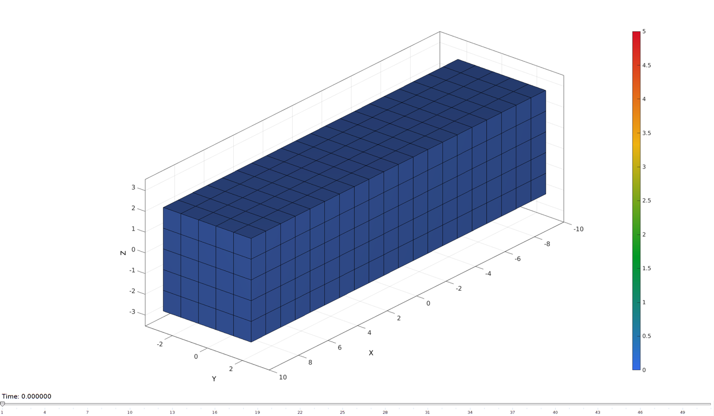

DEMO_FEBio_bar_twist
Below is a demonstration for:
- The creation of an FEBio model whereby a twist is applied to a selection of nodes, in this case to the end of a bar
- Running an FEBio job with MATLAB
- Importing FEBio results into MATLAB
Contents
clear; close all; clc;
Plot settings
fontSize=15; faceAlpha1=0.8; faceAlpha2=1; edgeColor=0.25*ones(1,3); edgeWidth=1.5; markerSize=50;
Control parameters
% path names defaultFolder = fileparts(fileparts(mfilename('fullpath'))); savePath=fullfile(defaultFolder,'data','temp'); modelNameEnd='tempModel'; modelName=fullfile(savePath,modelNameEnd); %Specifying dimensions and number of elements sampleWidth=20; h=5; sampleThickness=h; sampleHeight=h; pointSpacings=1.*[1 1 1]; numElementsWidth=round(sampleWidth/pointSpacings(1)); numElementsThickness=round(sampleThickness/pointSpacings(2)); numElementsHeight=round(sampleHeight/pointSpacings(3)); alphaRotTotal=0.5*pi; %Total twist angle numSteps=50; %Number of steps
CREATING MESHED BOX
%Create box 1 boxDim=[sampleWidth sampleThickness sampleHeight]; %Dimensions boxEl=[numElementsWidth numElementsThickness numElementsHeight]; %Number of elements [box1]=hexMeshBox(boxDim,boxEl); E=box1.E; V=box1.V; Fb=box1.Fb; faceBoundaryMarker=box1.faceBoundaryMarker; X=V(:,1); Y=V(:,2); Z=V(:,3); VE=[mean(X(E),2) mean(Y(E),2) mean(Z(E),2)]; elementMaterialIndices=ones(size(E,1),1);
Plotting boundary surfaces
cFigure; hold on; title('Model surfaces','FontSize',fontSize); gpatch(Fb,V,faceBoundaryMarker,'k',faceAlpha1); colormap(gjet(6)); icolorbar; axisGeom; camlight headlight; set(gca,'FontSize',fontSize); drawnow;
DEFINE BC's
%Supported nodes logicRigid=faceBoundaryMarker==1; Fr=Fb(logicRigid,:); bcRigidList=unique(Fr(:)); %Prescribed force nodes logicPrescribe=faceBoundaryMarker==2; Fr=Fb(logicPrescribe,:); bcPrescribeList=unique(Fr(:)); %Rotational settings alphaRotStep=alphaRotTotal/numSteps; %The angular increment for each step R=euler2DCM([alphaRotStep 0 0]); %The rotation tensor for each step V2=V*R; %Rotated 1 part for visualization of stepwise amount
Visualize BC's
cFigure; hold on; title('Boundary conditions','FontSize',fontSize); gpatch(Fb,V,0.5*ones(1,3),'k',0.4); plotV(V(bcRigidList,:),'b.','MarkerSize',markerSize); plotV(V(bcPrescribeList,:),'r.','MarkerSize',markerSize); plotV(V2(bcPrescribeList,:),'k.','MarkerSize',markerSize); axisGeom; camlight headlight; set(gca,'FontSize',fontSize); drawnow;
CONSTRUCTING FEB MODEL
FEB_struct.febio_spec.version='2.0'; FEB_struct.Module.Type='solid'; % Defining file names FEB_struct.run_filename=[modelName,'.feb']; %FEB file name FEB_struct.run_logname=[modelName,'.txt']; %FEBio log file name %Geometry section FEB_struct.Geometry.Nodes=V; FEB_struct.Geometry.Elements={E}; %The element sets FEB_struct.Geometry.ElementType={'hex8'}; %The element types FEB_struct.Geometry.ElementMat={elementMaterialIndices}; FEB_struct.Geometry.ElementsPartName={'Bar'}; %Material section c1=1e-3; k=1e3*c1; FEB_struct.Materials{1}.Type='Mooney-Rivlin'; FEB_struct.Materials{1}.Properties={'c1','c2','k'}; FEB_struct.Materials{1}.Values={c1,0,k}; %Defining node sets FEB_struct.Geometry.NodeSet{1}.Set=bcRigidList; FEB_struct.Geometry.NodeSet{1}.Name='bcRigidList'; FEB_struct.Geometry.NodeSet{2}.Set=bcPrescribeList; FEB_struct.Geometry.NodeSet{2}.Name='bcPrescribeList'; %Adding BC information FEB_struct.Boundary.Fix{1}.bc='x'; FEB_struct.Boundary.Fix{1}.SetName=FEB_struct.Geometry.NodeSet{1}.Name; FEB_struct.Boundary.Fix{2}.bc='y'; FEB_struct.Boundary.Fix{2}.SetName=FEB_struct.Geometry.NodeSet{1}.Name; FEB_struct.Boundary.Fix{3}.bc='z'; FEB_struct.Boundary.Fix{3}.SetName=FEB_struct.Geometry.NodeSet{1}.Name; %Creating steps V2=V; %Coordinate set for q=1:1:numSteps %Step specific control sections FEB_struct.Step{q}.Control.AnalysisType='static'; FEB_struct.Step{q}.Control.Properties={'time_steps','step_size',... 'max_refs','max_ups',... 'dtol','etol','rtol','lstol'}; n=1; %Number of desired analysis steps per step FEB_struct.Step{q}.Control.Values={n,1/n,... 25,0,... 0.001,0.01,0,0.9}; FEB_struct.Step{q}.Control.TimeStepperProperties={'dtmin','dtmax','max_retries','opt_iter'}; FEB_struct.Step{q}.Control.TimeStepperValues={(1/n)/100,1/n, 5, 5}; V2n=V2; V2=V2*R; bcPrescribeMagnitudesStep=V2(bcPrescribeList,:)-V2n(bcPrescribeList,:); %Prescribed BC's FEB_struct.Step{q}.Boundary.Prescribe{1}.Set=bcPrescribeList; FEB_struct.Step{q}.Boundary.Prescribe{1}.bc='x'; FEB_struct.Step{q}.Boundary.Prescribe{1}.lc=1; FEB_struct.Step{q}.Boundary.Prescribe{1}.nodeScale=bcPrescribeMagnitudesStep(:,1); FEB_struct.Step{q}.Boundary.Prescribe{1}.Type='relative'; FEB_struct.Step{q}.Boundary.Prescribe{2}.Set=bcPrescribeList; FEB_struct.Step{q}.Boundary.Prescribe{2}.bc='y'; FEB_struct.Step{q}.Boundary.Prescribe{2}.lc=1; FEB_struct.Step{q}.Boundary.Prescribe{2}.nodeScale=bcPrescribeMagnitudesStep(:,2); FEB_struct.Step{q}.Boundary.Prescribe{2}.Type='relative'; FEB_struct.Step{q}.Boundary.Prescribe{3}.Set=bcPrescribeList; FEB_struct.Step{q}.Boundary.Prescribe{3}.bc='z'; FEB_struct.Step{q}.Boundary.Prescribe{3}.lc=1; FEB_struct.Step{q}.Boundary.Prescribe{3}.nodeScale=bcPrescribeMagnitudesStep(:,3); FEB_struct.Step{q}.Boundary.Prescribe{3}.Type='relative'; end %Load curves FEB_struct.LoadData.LoadCurves.id=1; FEB_struct.LoadData.LoadCurves.type={'linear'}; FEB_struct.LoadData.LoadCurves.loadPoints={[0 0;1 1;]}; %Adding output requests FEB_struct.Output.VarTypes={'displacement','stress','relative volume'}; %Specify log file output run_disp_output_name=[modelNameEnd,'_node_out.txt']; run_force_output_name=[modelNameEnd,'_force_out.txt']; FEB_struct.run_output_names={run_disp_output_name,run_force_output_name}; FEB_struct.output_types={'node_data','node_data'}; FEB_struct.data_types={'ux;uy;uz','Rx;Ry;Rz'};
SAVING .FEB FILE
FEB_struct.disp_opt=0; %Display waitbars
febStruct2febFile(FEB_struct);
%%%%%%%%%%%%%%%%%%%%%%%%%%%%%%%%%%%%%%%%%%%%% --- Writing FEBio XML object --- 29-Jun-2017 14:31:17 Adding Module level Adding Globals level Adding Material level Adding Geometry level ----> Adding node field ----> Adding element field ----> Adding hex8 element entries.... ----> Adding NodeSet field Adding Boundary level ----> Defining fix type boundary conditions Adding LoadData level ----> Defining load curves Adding Step level ----> Adding Module field ----> Adding Boundary field ----> Defining prescribe type boundary conditions ----> Adding Control field Adding Step level ----> Adding Module field ----> Adding Boundary field ----> Defining prescribe type boundary conditions ----> Adding Control field Adding Step level ----> Adding Module field ----> Adding Boundary field ----> Defining prescribe type boundary conditions ----> Adding Control field Adding Step level ----> Adding Module field ----> Adding Boundary field ----> Defining prescribe type boundary conditions ----> Adding Control field Adding Step level ----> Adding Module field ----> Adding Boundary field ----> Defining prescribe type boundary conditions ----> Adding Control field Adding Step level ----> Adding Module field ----> Adding Boundary field ----> Defining prescribe type boundary conditions ----> Adding Control field Adding Step level ----> Adding Module field ----> Adding Boundary field ----> Defining prescribe type boundary conditions ----> Adding Control field Adding Step level ----> Adding Module field ----> Adding Boundary field ----> Defining prescribe type boundary conditions ----> Adding Control field Adding Step level ----> Adding Module field ----> Adding Boundary field ----> Defining prescribe type boundary conditions ----> Adding Control field Adding Step level ----> Adding Module field ----> Adding Boundary field ----> Defining prescribe type boundary conditions ----> Adding Control field Adding Step level ----> Adding Module field ----> Adding Boundary field ----> Defining prescribe type boundary conditions ----> Adding Control field Adding Step level ----> Adding Module field ----> Adding Boundary field ----> Defining prescribe type boundary conditions ----> Adding Control field Adding Step level ----> Adding Module field ----> Adding Boundary field ----> Defining prescribe type boundary conditions ----> Adding Control field Adding Step level ----> Adding Module field ----> Adding Boundary field ----> Defining prescribe type boundary conditions ----> Adding Control field Adding Step level ----> Adding Module field ----> Adding Boundary field ----> Defining prescribe type boundary conditions ----> Adding Control field Adding Step level ----> Adding Module field ----> Adding Boundary field ----> Defining prescribe type boundary conditions ----> Adding Control field Adding Step level ----> Adding Module field ----> Adding Boundary field ----> Defining prescribe type boundary conditions ----> Adding Control field Adding Step level ----> Adding Module field ----> Adding Boundary field ----> Defining prescribe type boundary conditions ----> Adding Control field Adding Step level ----> Adding Module field ----> Adding Boundary field ----> Defining prescribe type boundary conditions ----> Adding Control field Adding Step level ----> Adding Module field ----> Adding Boundary field ----> Defining prescribe type boundary conditions ----> Adding Control field Adding Step level ----> Adding Module field ----> Adding Boundary field ----> Defining prescribe type boundary conditions ----> Adding Control field Adding Step level ----> Adding Module field ----> Adding Boundary field ----> Defining prescribe type boundary conditions ----> Adding Control field Adding Step level ----> Adding Module field ----> Adding Boundary field ----> Defining prescribe type boundary conditions ----> Adding Control field Adding Step level ----> Adding Module field ----> Adding Boundary field ----> Defining prescribe type boundary conditions ----> Adding Control field Adding Step level ----> Adding Module field ----> Adding Boundary field ----> Defining prescribe type boundary conditions ----> Adding Control field Adding Step level ----> Adding Module field ----> Adding Boundary field ----> Defining prescribe type boundary conditions ----> Adding Control field Adding Step level ----> Adding Module field ----> Adding Boundary field ----> Defining prescribe type boundary conditions ----> Adding Control field Adding Step level ----> Adding Module field ----> Adding Boundary field ----> Defining prescribe type boundary conditions ----> Adding Control field Adding Step level ----> Adding Module field ----> Adding Boundary field ----> Defining prescribe type boundary conditions ----> Adding Control field Adding Step level ----> Adding Module field ----> Adding Boundary field ----> Defining prescribe type boundary conditions ----> Adding Control field Adding Step level ----> Adding Module field ----> Adding Boundary field ----> Defining prescribe type boundary conditions ----> Adding Control field Adding Step level ----> Adding Module field ----> Adding Boundary field ----> Defining prescribe type boundary conditions ----> Adding Control field Adding Step level ----> Adding Module field ----> Adding Boundary field ----> Defining prescribe type boundary conditions ----> Adding Control field Adding Step level ----> Adding Module field ----> Adding Boundary field ----> Defining prescribe type boundary conditions ----> Adding Control field Adding Step level ----> Adding Module field ----> Adding Boundary field ----> Defining prescribe type boundary conditions ----> Adding Control field Adding Step level ----> Adding Module field ----> Adding Boundary field ----> Defining prescribe type boundary conditions ----> Adding Control field Adding Step level ----> Adding Module field ----> Adding Boundary field ----> Defining prescribe type boundary conditions ----> Adding Control field Adding Step level ----> Adding Module field ----> Adding Boundary field ----> Defining prescribe type boundary conditions ----> Adding Control field Adding Step level ----> Adding Module field ----> Adding Boundary field ----> Defining prescribe type boundary conditions ----> Adding Control field Adding Step level ----> Adding Module field ----> Adding Boundary field ----> Defining prescribe type boundary conditions ----> Adding Control field Adding Step level ----> Adding Module field ----> Adding Boundary field ----> Defining prescribe type boundary conditions ----> Adding Control field Adding Step level ----> Adding Module field ----> Adding Boundary field ----> Defining prescribe type boundary conditions ----> Adding Control field Adding Step level ----> Adding Module field ----> Adding Boundary field ----> Defining prescribe type boundary conditions ----> Adding Control field Adding Step level ----> Adding Module field ----> Adding Boundary field ----> Defining prescribe type boundary conditions ----> Adding Control field Adding Step level ----> Adding Module field ----> Adding Boundary field ----> Defining prescribe type boundary conditions ----> Adding Control field Adding Step level ----> Adding Module field ----> Adding Boundary field ----> Defining prescribe type boundary conditions ----> Adding Control field Adding Step level ----> Adding Module field ----> Adding Boundary field ----> Defining prescribe type boundary conditions ----> Adding Control field Adding Step level ----> Adding Module field ----> Adding Boundary field ----> Defining prescribe type boundary conditions ----> Adding Control field Adding Step level ----> Adding Module field ----> Adding Boundary field ----> Defining prescribe type boundary conditions ----> Adding Control field Adding Step level ----> Adding Module field ----> Adding Boundary field ----> Defining prescribe type boundary conditions ----> Adding Control field Adding Output level ----> Adding plotfile field ----> Adding logfile field Writing .feb file --- Done --- 29-Jun-2017 14:31:19
RUNNING FEBIO JOB
FEBioRunStruct.run_filename=FEB_struct.run_filename; FEBioRunStruct.run_logname=FEB_struct.run_logname; FEBioRunStruct.disp_on=1; FEBioRunStruct.disp_log_on=1; FEBioRunStruct.runMode='external';%'internal'; FEBioRunStruct.t_check=0.25; %Time for checking log file (dont set too small) FEBioRunStruct.maxtpi=1e99; %Max analysis time FEBioRunStruct.maxLogCheckTime=3; %Max log file checking time [runFlag]=runMonitorFEBio(FEBioRunStruct);%START FEBio NOW!!!!!!!!
%%%%%%%%%%%%%%%%%%%%%%%%%%%%%%%%%%%%%%%%%%%%% --- STARTING FEBIO JOB --- 29-Jun-2017 14:31:19 Waiting for log file... Proceeding to check log file...29-Jun-2017 14:31:19 ------- converged at time : 1 ------- converged at time : 2 ------- converged at time : 3 ------- converged at time : 4 ------- converged at time : 5 ------- converged at time : 6 ------- converged at time : 7 ------- converged at time : 8 ------- converged at time : 9 ------- converged at time : 10 ------- converged at time : 11 ------- converged at time : 12 ------- converged at time : 13 ------- converged at time : 14 ------- converged at time : 15 ------- converged at time : 16 ------- converged at time : 17 ------- converged at time : 18 ------- converged at time : 19 ------- converged at time : 20 ------- converged at time : 21 ------- converged at time : 22 ------- converged at time : 23 ------- converged at time : 24 ------- converged at time : 25 ------- converged at time : 26 ------- converged at time : 27 ------- converged at time : 28 ------- converged at time : 29 ------- converged at time : 30 ------- converged at time : 31 ------- converged at time : 32 ------- converged at time : 33 ------- converged at time : 34 ------- converged at time : 35 ------- converged at time : 36 ------- converged at time : 37 ------- converged at time : 38 ------- converged at time : 39 ------- converged at time : 40 ------- converged at time : 41 ------- converged at time : 42 ------- converged at time : 43 ------- converged at time : 44 ------- converged at time : 45 ------- converged at time : 46 ------- converged at time : 47 ------- converged at time : 48 ------- converged at time : 49 ------- converged at time : 50 --- Done --- 29-Jun-2017 14:31:24
if runFlag==1 %i.e. a succesful run
IMPORTING NODAL DISPLACEMENT RESULTS
Importing nodal displacements from a log file
[~, N_disp_mat,~]=importFEBio_logfile(fullfile(savePath,FEB_struct.run_output_names{1})); %Nodal displacements
IMPORTING NODAL FORCES
Importing nodal forces from a log file
[time_mat, N_force_mat,~]=importFEBio_logfile(fullfile(savePath,FEB_struct.run_output_names{2})); %Nodal forces
time_mat=[0; time_mat(:)]; %Time
N_disp_mat=N_disp_mat(:,2:end,:);
sizImport=size(N_disp_mat);
sizImport(3)=sizImport(3)+1;
N_disp_mat_n=zeros(sizImport);
N_disp_mat_n(:,:,2:end)=N_disp_mat;
N_disp_mat=N_disp_mat_n;
DN=N_disp_mat(:,:,end);
DN_magnitude=sqrt(sum(DN(:,3).^2,2));
V_def=V+DN;
[CF]=vertexToFaceMeasure(Fb,DN_magnitude);
Axis limits for plotting
minD=min(V+min(N_disp_mat,[],3),[],1);
maxD=max(V+max(N_disp_mat,[],3),[],1);
axisLim=[minD(1) maxD(1) minD(2) maxD(2) minD(3) maxD(3)];
Plotting the deformed model
hf=cFigure;
xlabel('X','FontSize',fontSize); ylabel('Y','FontSize',fontSize); zlabel('Z','FontSize',fontSize); hold on;
hp=gpatch(Fb,V_def,CF,'k',1);
gpatch(Fb,V,0.5*ones(1,3),'k',0.25);
view(3); axis tight; axis equal; grid on; box on;
colormap(gjet(250)); colorbar;
caxis([0 max(DN_magnitude)]);
view(130,25);
camlight headlight;
set(gca,'FontSize',fontSize);
axis(axisLim);
drawnow;
animStruct.Time=time_mat;
for qt=1:1:size(N_disp_mat,3)
DN=N_disp_mat(:,:,qt);
DN_magnitude=sqrt(sum(DN(:,3).^2,2));
V_def=V+DN;
[CF]=vertexToFaceMeasure(Fb,DN_magnitude);
%Set entries in animation structure
animStruct.Handles{qt}=[hp hp]; %Handles of objects to animate
animStruct.Props{qt}={'Vertices','CData'}; %Properties of objects to animate
animStruct.Set{qt}={V_def,CF}; %Property values for to set in order to animate
end
anim8(hf,animStruct);
drawnow;
 end

GIBBON www.gibboncode.org
Kevin Mattheus Moerman, gibbon.toolbox@gmail.com